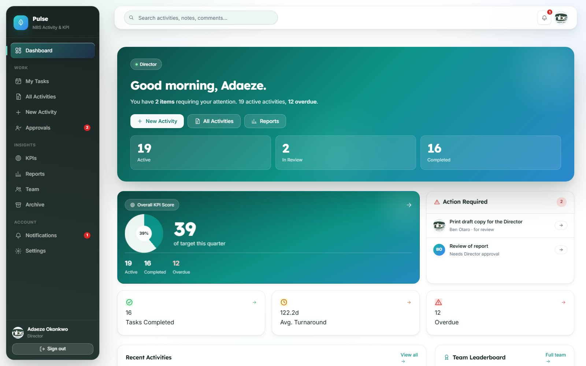
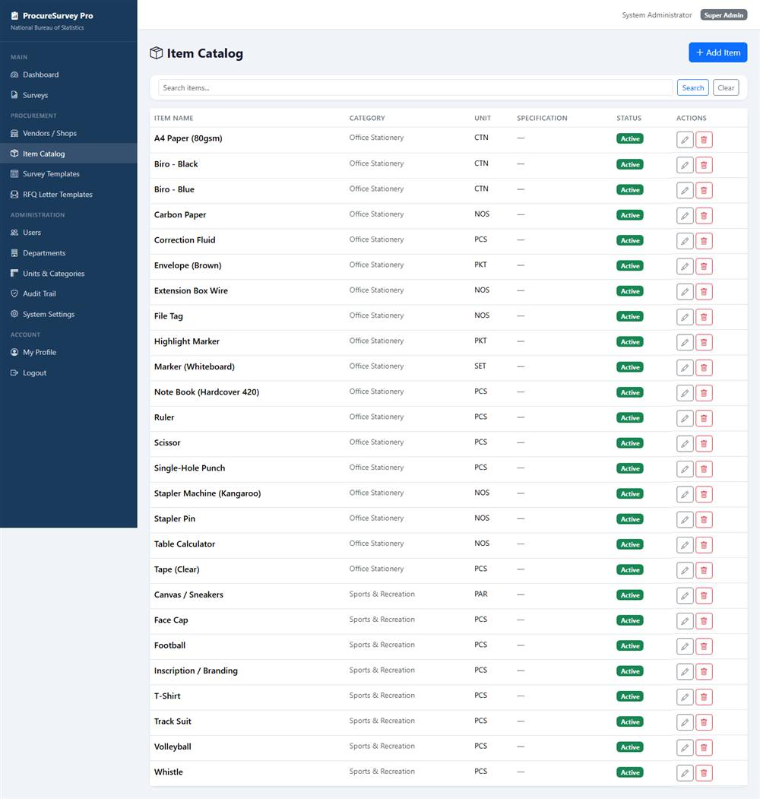
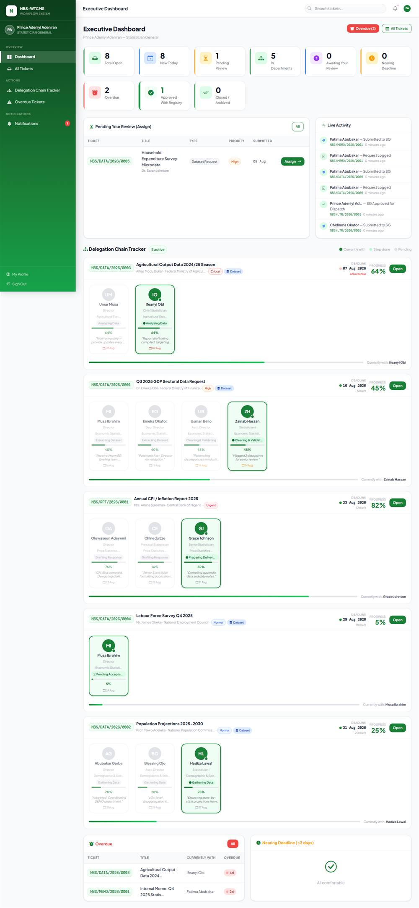
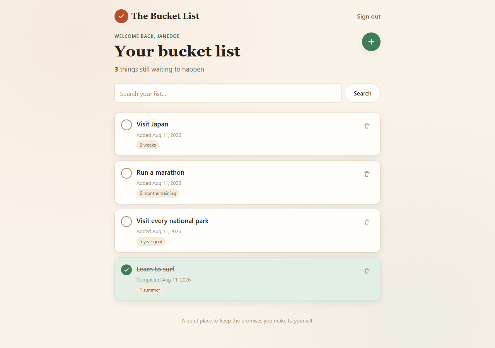
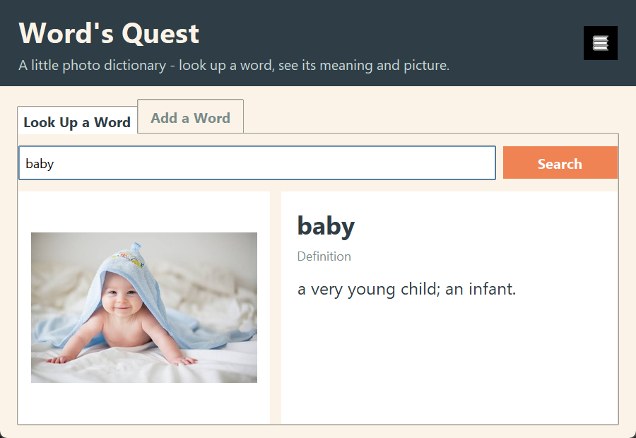
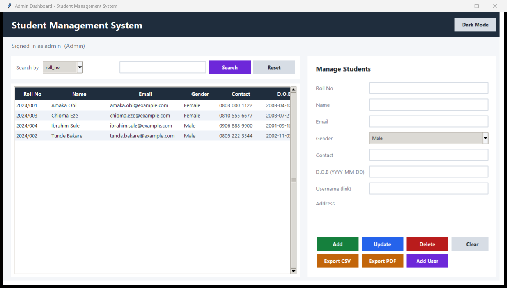
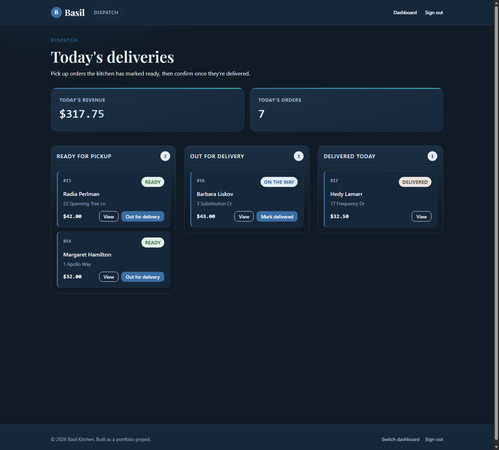

Turning raw data into decisions that hold up.
I'm a Statistics graduate from Ahmadu Bello University with practical experience at Nigeria's National Bureau of Statistics and a further internship in IT and data. I work across the Python and Django stack, cleaning, modelling and visualising real datasets, and I'm currently working toward an MSc in Data Science.
From counting things to modelling what they mean.
I graduated with a BSc in Statistics from Ahmadu Bello University in 2024, with coursework spanning regression analysis, probability theory, time series, statistical computing, survey sampling and operations research.
I've since applied that foundation to real datasets as a Data & Administrative Intern at Nigeria's National Bureau of Statistics, cleaning, validating and analysing official government statistics and helping collect primary data through field surveys and censuses, and earlier as an IT & Data Intern at New Horizons Nigeria through a further internship.
Outside of formal work I build my own projects to keep sharpening the stack: Django web applications inspired by problems I saw during my NBS internship, plus a few independent Python/Tkinter desktop tools. I'm currently working toward an MSc in Data Science.
- Based
- Abuja, Nigeria · open to remote
- Focus
- Statistics · Python · Data analysis
- Education
- BSc Statistics, ABU (2020 to 2024)
- GitHub
- github.com/Jenks00
- Status
- Open to data science roles
Three ways I work with data
Data analysis & statistics
Cleaning, validating and modelling real datasets: regression, hypothesis testing, time series and EDA, grounded in formal statistical training.
Software development
Python and Django web applications: from workflow tools to data entry systems, built to solve problems I've seen firsthand.
Research & reporting
Structured academic and applied research, from raw data to a report that anyone can act on, regardless of technical background.
Working directly with real government data
Two internships applying statistical and technical training to live datasets and daily operations.
Data & Administrative Intern, National Bureau of Statistics
Cleaned, validated and analysed official government statistical datasets; collected primary data through field surveys and censuses; digitised records via tablets in line with NBS procedures; supported statistical reporting used in national publications.
IT & Data Intern, New Horizons Nigeria
Worked alongside IT staff on data tasks and troubleshooting; supported data cleaning and analysis for ongoing operations; collaborated across teams with varying technical backgrounds.
Web apps and desktop tools, side by side
Django web apps and Python/Tkinter desktop tools, some inspired by problems I saw during my NBS internship, others built independently.

Pulse: Activity & KPI Tracker
Flip for detailsPulse: Activity & KPI Tracker
A Django/PostgreSQL tool tracking departmental activities and KPIs across an organisational hierarchy, with a separate admin portal.

ProcureSurvey Pro
Flip for detailsProcureSurvey Pro
A procurement market survey management system designed to collect, store and report on survey data from start to finish.

NBS WTCMS
Flip for detailsNBS WTCMS
A workflow, ticketing and correspondence system modelling document requests and dataset delivery between two roles, with a live delegation chain tracker.

The Bucket List
Flip for detailsThe Bucket List
A personal bucket-list and to-do tracker built with Django. Per-user accounts, search, completion dates, and a hand-written CSS UI with no external frameworks.

Word's Quest Photo Dictionary
Flip for detailsWord's Quest Photo Dictionary
A desktop photo dictionary built with Python and Tkinter: look up a word to see its definition and a matching illustration, or add new words and pictures of your own.

Student Management System
Flip for detailsStudent Management System
A desktop school records manager built with Python and Tkinter, with role-based logins, full CRUD on student records, search, and CSV/PDF export.

Online Food Delivery App
Flip for detailsOnline Food Delivery App
Django ordering platform with two live pipelines: a kitchen dashboard that moves orders to "cooking" and "ready", and a dispatch dashboard that tracks delivery.
Contributions across the Stellar ecosystem
Active contributor to Web3 / Stellar & Soroban projects: payments, SDKs and dev tooling.
Skills & stack
Before you reach out
What kind of roles are you looking for?+
Can I see the private NBS projects in action?+
Are you open to remote work?+
What's next for you?+
Working on something that needs real analysis?
I'm open to data science, data analyst and research roles, plus freelance work, and always happy to talk about MSc research collaborations.